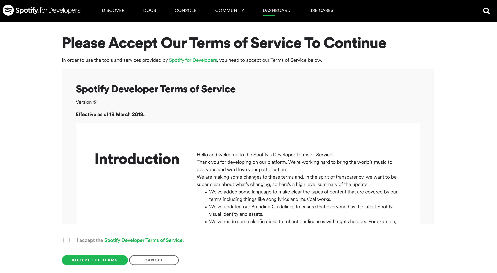
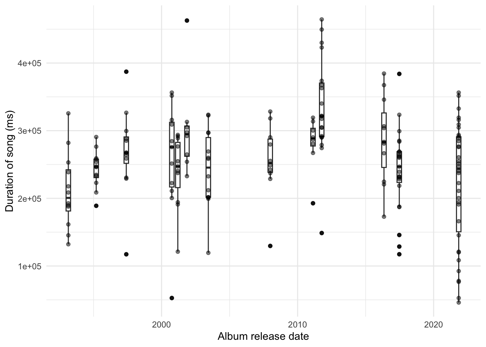
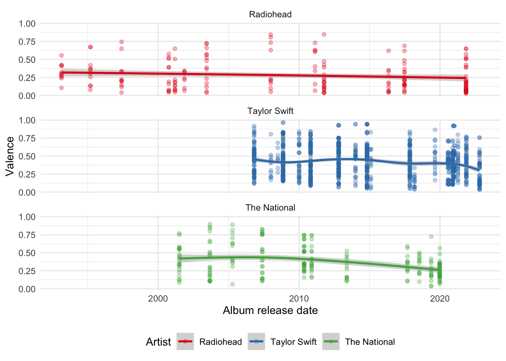
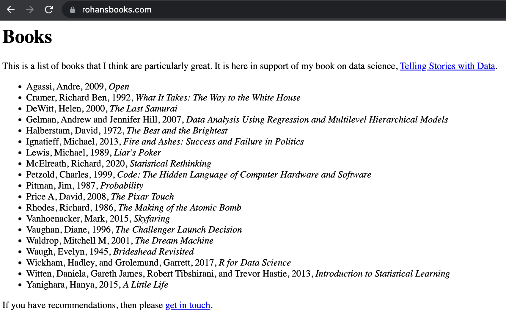
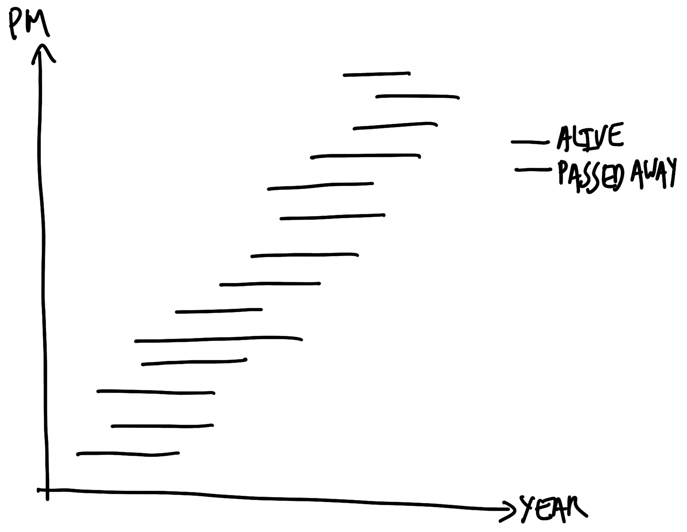
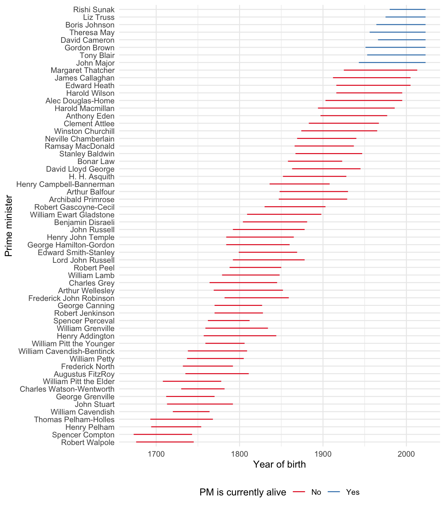
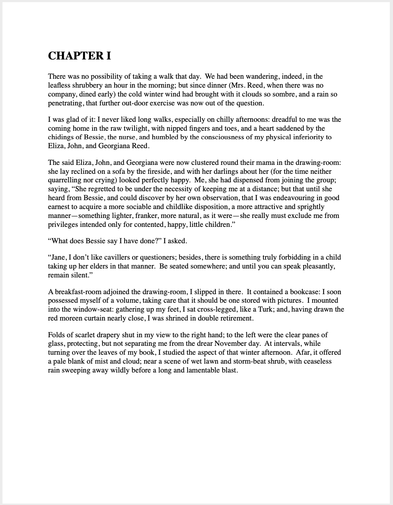
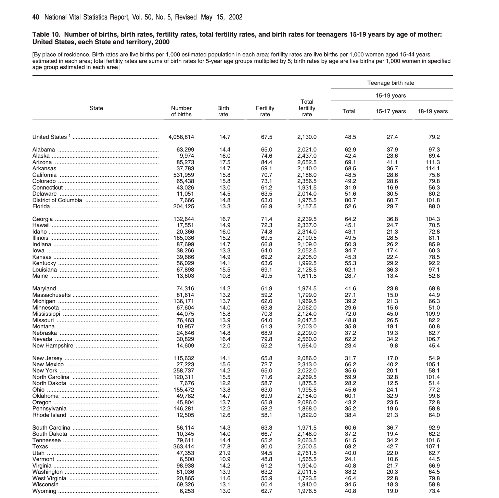
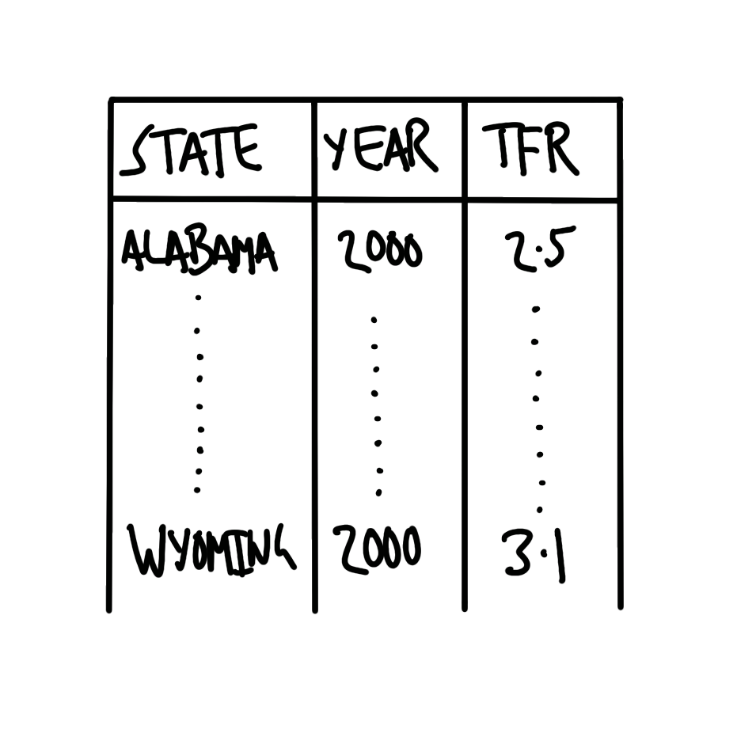
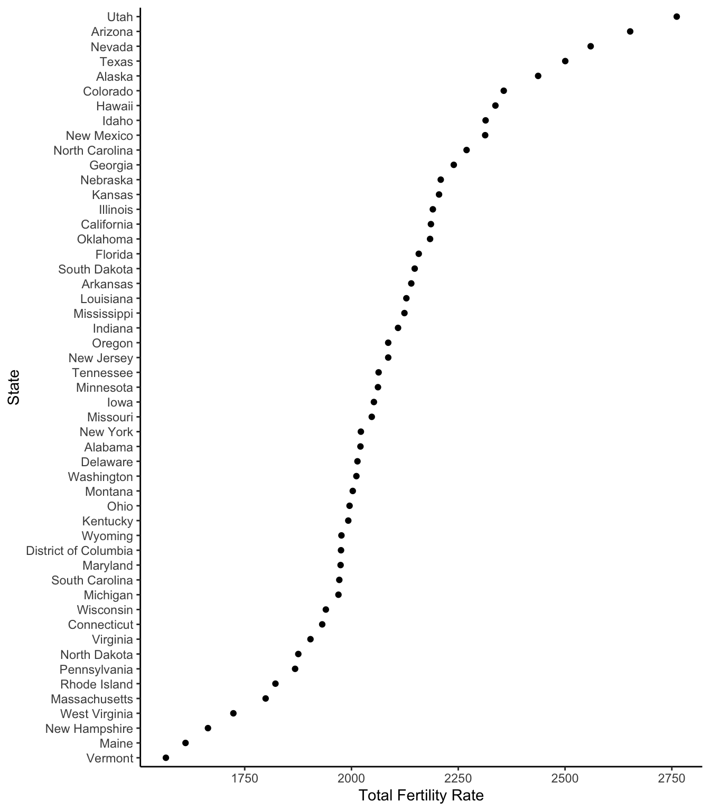

library(babynames)
library(gh)
library(here)
library(httr)
library(janitor)
library(jsonlite)
library(knitr)
library(lubridate)
library(pdftools)
library(purrr)
library(rvest)
library(spotifyr)
library(tesseract)
library(tidyverse)
library(usethis)
library(xml2)7 Gather data
Prerequisites
- Read Turning History into Data: Data Collection, Measurement, and Inference in HPE, (Cirone and Spirling 2021)
- This paper discusses some of the challenges of creating datasets.
- Read Two Regimes of Prison Data Collection, (Johnson 2021)
- This paper compares data about prisons from the United States government with data from incarcerated people and the community.
- Read Atlas of AI, (Crawford 2021)
- Focus on Chapter 3 “Data”, which discusses the importance of understanding the sources of data.
Key concepts and skills
- Sometimes data are available but they are not necessarily put together for the purposes of being a dataset. We must gather the data.
- It can be cumbersome and annoying to must clean and prepare the datasets that come from these unstructured sources but the resulting structured, tidy data are often especially exciting and useful.
- We can gather data from a variety of sources. This includes APIs, both directly, which may involve semi-structured data, and indirectly through R packages. We can also gather data through reasonable and ethical web scraping. Finally, we may wish to gather data from PDFs.
Software and packages
- Base R (R Core Team 2023)
babynames(Wickham 2021)gh(Bryan and Wickham 2021)here(Müller 2020)httr(Wickham 2023)janitor(Firke 2023)jsonlite(Ooms 2014)knitr(Xie 2023)lubridate(Grolemund and Wickham 2011)pdftools(Ooms 2022a)purrr(Wickham and Henry 2022)rvest(Wickham 2022)spotifyr(Thompson et al. 2022)tesseract(Ooms 2022b)tidyverse(Wickham et al. 2019)usethis(Wickham, Bryan, and Barrett 2022)xml2(Wickham, Hester, and Ooms 2021)
7.1 Introduction
In this chapter we consider data that we must gather ourselves. This means that although the observations exist, we must parse, pull, clean, and prepare them to get the dataset that we will consider. In contrast to farmed data, discussed in Chapter 6, often these observations are not being made available for the purpose of analysis. This means that we need to be especially concerned with documentation, inclusion and exclusion decisions, missing data, and ethical behavior.
As an example of such a dataset, consider Cummins (2022) who create a dataset using individual-level probate records from England between 1892 and 1992. They find that about one-third of the inheritance of “elites” is concealed. Similarly, Taflaga and Kerby (2019) construct a systematic dataset of job responsibilities based on Australian Ministerial telephone directories. They find substantial differences by gender. Neither wills nor telephone directories were created for the purpose of being included in a dataset. But with a respectful approach they enable insights that we could not get by other means. We term this “data gathering”—the data exist but we need to get them.
Decisions need to be made at the start of a project about the values we want the project to have. For instance, Saulnier et al. (2022) value transparency, reproducibility, fairness, being self-critical, and giving credit. How might that affect the project? Valuing “giving credit” might mean being especially zealous about attribution and licensing. In the case of gathered data we should give special thought to this as the original, unedited data may not be ours.
The results of a data science workflow cannot be better than their underlying data (Bailey 2008). Even the most-sophisticated statistical analysis will struggle to adjust for poorly-gathered data. This means when working in a team, data gathering should be overseen and at least partially conducted by senior members of the team. And when working by yourself, try to give special consideration and care to this stage.
In this chapter we go through a variety of approaches for gathering data. We begin with the use of APIs and semi-structured data, such as JSON and XML. Using an API is typically a situation in which the data provider has specified the conditions under which they are comfortable providing access. An API allows us to write code to gather data. This is valuable because it can be efficient and scales well. Developing comfort with gathering data through APIs enables access to exciting datasets. For instance, Wong (2020) use the Facebook Political Ad API to gather 218,100 of the Trump 2020 campaign ads to better understand the campaign.
We then turn to web scraping, which we may want to use when there are data available on a website. As these data have typically not been put together for the purposes of being a dataset, it is especially important to have deliberate and definite values for the project. Scraping is a critical part of data gathering because there are many data sources where the priorities of the data provider mean they have not implemented an API. For instance, considerable use of web scraping was critical for creating COVID-19 dashboards in the early days of the pandemic (Eisenstein 2022).
Finally, we consider gathering data from PDFs. This enables the construction of interesting datasets, especially those contained in government reports and old books. Indeed, while freedom of information legislation exists in many countries and require the government to make data available, these all too often result in spreadsheets being shared as PDFs, even when they were a CSV to begin with.
Gathering data can require more of us than using farmed data, but it allows us to explore datasets and answer questions that we could not otherwise. Some of the most exciting work in the world uses gathered data, but it is especially important that we approach it with respect.
7.2 APIs
In everyday language, and for our purposes, an Application Programming Interface (API) is a situation in which someone has set up specific files on their computer such that we can follow their instructions to get them. For instance, when we use a gif on Slack, one way it could work in the background is that Slack asks Giphy’s server for the appropriate gif, Giphy’s server gives that gif to Slack, and then Slack inserts it into the chat. The way in which Slack and Giphy interact is determined by Giphy’s API. More strictly, an API is an application that runs on a server that we access using the HTTP protocol.
Here we focus on using APIs for gathering data. In that context an API is a website that is set up for another computer to be able to access it, rather than a person. For instance, we could go to Google Maps. And we could then scroll and click and drag to center the map on, say, Canberra, Australia. Or we could paste this link into the browser. By pasting that link, rather than navigating, we have mimicked how we will use an API: provide a URL and be given something back. In this case the result should be a map like Figure 7.1.
The advantage of using an API is that the data provider usually specifies the data that they are willing to provide, and the terms under which they will provide it. These terms may include aspects such as rate limits (i.e. how often we can ask for data), and what we can do with the data, for instance, we might not be allowed to use it for commercial purposes, or to republish it. As the API is being provided specifically for us to use it, it is less likely to be subject to unexpected changes or legal issues. Because of this it is clear that when an API is available, we should try to use it rather than web scraping.
We will now go through a few case studies of using APIs. In the first we deal directly with an API using httr. And then we access data from Spotify using spotifyr.
7.2.1 arXiv, NASA, and Dataverse
After installing and loading httr we use GET() to obtain data from an API directly. This will try to get some specific data and the main argument is “url”. This is similar to the Google Maps example in Figure 7.1 where the specific information that we were interested in was a map.
7.2.1.1 arXiv
In this case study we will use an API provided by arXiv. arXiv is an online repository for academic papers before they go through peer review. These papers are typically referred to as “pre-prints”. We use GET() to ask arXiv to obtain some information about a pre-print by providing a URL.
arxiv <- GET("http://export.arxiv.org/api/query?id_list=2111.09299")
status_code(arxiv)[1] 200We can use status_code() to check our response. For instance, 200 means a success, while 400 means we received an error from the server. Assuming we received something back from the server, we can use content() to display it. In this case we have received XML formatted data. XML is a markup language where entries are identified by tags, which can be nested within other tags. After installing and loading xml2 we can read XML using read_xml(). XML is a semi-formatted structure, and it can be useful to start by having a look at it using html_structure().
content(arxiv) |>
read_xml() |>
html_structure()<feed [xmlns]>
<link [href, rel, type]>
<title [type]>
{text}
<id>
{text}
<updated>
{text}
<totalResults [xmlns:opensearch]>
{text}
<startIndex [xmlns:opensearch]>
{text}
<itemsPerPage [xmlns:opensearch]>
{text}
<entry>
<id>
{text}
<updated>
{text}
<published>
{text}
<title>
{text}
<summary>
{text}
<author>
<name>
{text}
<author>
<name>
{text}
<comment [xmlns:arxiv]>
{text}
<link [href, rel, type]>
<link [title, href, rel, type]>
<primary_category [term, scheme, xmlns:arxiv]>
<category [term, scheme]>We might like to create a dataset based on extracting various aspects of this XML tree. For instance, we might look at “entry”, which is the eighth item, and in particular obtain the “title” and the “URL”, which are the fourth and ninth items, respectively, within “entry”.
data_from_arxiv <-
tibble(
title = content(arxiv) |>
read_xml() |>
xml_child(search = 8) |>
xml_child(search = 4) |>
xml_text(),
link = content(arxiv) |>
read_xml() |>
xml_child(search = 8) |>
xml_child(search = 9) |>
xml_attr("href")
)
data_from_arxiv# A tibble: 1 × 2
title link
<chr> <chr>
1 "The Increased Effect of Elections and Changing Prime Ministers on Topi… http…7.2.1.2 NASA Astronomy Picture of the Day
To consider another example, each day, NASA provides the Astronomy Picture of the Day (APOD) through its APOD API. We can use GET() to obtain the URL for the photo on particular dates and then display it.
NASA_APOD_20190719 <-
GET("https://api.nasa.gov/planetary/apod?api_key=DEMO_KEY&date=2019-07-19")Examining the returned data using content(), we can see that we are provided with various fields, such as date, title, explanation, and a URL.
# APOD July 19, 2019
content(NASA_APOD_20190719)$date[1] "2019-07-19"content(NASA_APOD_20190719)$title[1] "Tranquility Base Panorama"content(NASA_APOD_20190719)$explanation[1] "On July 20, 1969 the Apollo 11 lunar module Eagle safely touched down on the Moon. It landed near the southwestern corner of the Moon's Mare Tranquillitatis at a landing site dubbed Tranquility Base. This panoramic view of Tranquility Base was constructed from the historic photos taken from the lunar surface. On the far left astronaut Neil Armstrong casts a long shadow with Sun is at his back and the Eagle resting about 60 meters away ( AS11-40-5961). He stands near the rim of 30 meter-diameter Little West crater seen here to the right ( AS11-40-5954). Also visible in the foreground is the top of the camera intended for taking stereo close-ups of the lunar surface."content(NASA_APOD_20190719)$url[1] "https://apod.nasa.gov/apod/image/1907/apollo11TranquilitybasePan600h.jpg"We can provide that URL to include_graphics() from knitr to display it (Figure 7.3).

7.2.1.3 Dataverse
Finally, another common API response in semi-structured form is JSON. JSON is a human-readable way to store data that can be parsed by machines. In contrast to, say, a CSV, where we are used to rows and columns, JSON uses key-value pairs.
{
"firstName": "Rohan",
"lastName": "Alexander",
"age": 36,
"favFoods": {
"first": "Pizza",
"second": "Bagels",
"third": null
}
}We can parse JSON with jsonlite. To consider a specific example, we use a “Dataverse” which is a web application that makes it easier to share datasets. We can use an API to query a demonstration dataverse. For instance, we might be interested in datasets related to politics.
politics_datasets <-
fromJSON("https://demo.dataverse.org/api/search?q=politics")
politics_datasets$status
[1] "OK"
$data
$data$q
[1] "politics"
$data$total_count
[1] 9
$data$start
[1] 0
$data$spelling_alternatives
named list()
$data$items
name
1 CAP - United Kingdom
2 China Archive Dataverse
3 Policy Dynamics and Government Attention over Welfare Policies: An Analysis of the Brazilian Case
4 Aspetti della vita quotidiana (2016)
5 Aspetti della vita quotidiana (2020)
6 CAP - Australia
7 table_1.tab
8 cora-efc2000-E-2000-4_F1.tab
9 survey.tab
type url
1 dataverse https://demo.dataverse.org/dataverse/CAP_UK
2 dataverse https://demo.dataverse.org/dataverse/china-archive
3 dataset https://doi.org/10.70122/FK2/ZR9M6C
4 dataset https://doi.org/10.70122/FK2/ZKZPSJ
5 dataset https://doi.org/10.70122/FK2/NJ77JM
6 dataverse https://demo.dataverse.org/dataverse/CAP_Australia
7 file https://demo.dataverse.org/api/access/datafile/2029365
8 file https://demo.dataverse.org/api/access/datafile/2069367
9 file https://demo.dataverse.org/api/access/datafile/2077715
identifier
1 CAP_UK
2 china-archive
3 <NA>
4 <NA>
5 <NA>
6 CAP_Australia
7 <NA>
8 <NA>
9 <NA>
description
1 The UK Policy Agendas Project seeks to develop systematic measures of the policy agenda of British government and politics over time. It applies the policy content coding system of the original Policy Agendas Project in the United States, founded by Frank Baumgartner and Bryan Jones, with the aim of creating a consistent record of the issues that are attended to at different points in time, across many of the main venues of British public policy and politics – namely in parliament, the media and public opinion. The reliability of these measures of policy attention are ensured through adherence to clearly defined coding rules and standards, which give us confidence that changes in the priorities of government can be tracked consistently over time and in different arenas of politics. Location: University of Edinburgh; University of Southampton Downloadable Data Series: 12 Time Span: 1910-2015 Total Observations: 125,539
2 Introduction The China Archive is a data archive dedicated to support of scholarly, empirical research by anthropologists, economists, historians, political scientists, sociologists, and others in the fields of business, agriculture, and engineering. The goal of the Archive is to enable case research on Chinese domestic matters and China–U.S. relations, as well as to facilitate the inclusion of China in more broadly comparative studies. To that end, the Archive’s mission includes: acquiring and maintaining extant data sets and data sources on an ongoing basis, facilitating production of quantitative data from textual information when such is desirable and feasible, making all of the Archive’s data available on a user-friendly basis to scholars at and visiting Texas A&M University, and establishing web-based links to searchable electronic sources of information on China. As long-term goals, The China Archive is especially dedicated to: locating and acquiring difficult-to-obtain Chinese data such as public opinion data, making as many of the holdings as possible available online or via other computer media, and providing capability for converting textual data to numerical data suitable for quantitative analysis. In keeping with these goals, the Archive includes data sets collected by individuals and research centers/institutes as well as by government agencies. The Archive was planned by a faculty committee in 2002–2003, and is now a project of the Texas A&M University Libraries. A faculty committee continues to function as an advisory committee to the Libraries on matters related to the upkeep and expansion of The China Archive. The faculty committee is, in turn, advised by an External Advisory Panel, composed of China scholars from other academic institutions in the United States. Faculty Planning Committee Bob Harmel, Archive Planning Committee Chair; Political Science; Director, Program in the Cross-National Study of Politics Stephen Atkins, Sterling Evans Library Ben Crouch, Associate Dean, College of Liberal Arts Qi Li, Department of Economics Xinsheng Liu, Institute for Science, Technology and Public Policy, Bush School of Government and Public Service; School of Government, Peking University Rick Nader, Director, Institute for Pacific Asia Dudley Poston, Professor of Sociology and Abell Professor of Liberal Arts Raghavan (Srini) Srinivasan, Director, Spatial Sciences Laboratory, Texas Agriculture Experiment Station Di Wang, Assistant Professor of History Ben Wu, Associate Professor, Rangeland Ecology and Management Wei Zhao, Professor, Computer Science; Associate Vice President for Research Dianzhi (Dan) Sui, Department of Geography
3 The recognition of issues as public problems and the ways governments prioritize them constitute focal points in the study of policy change and policy dynamics. In Brazil and other Latin American countries, social welfare systems and related policies have undergone transformations throughout the recent democratic period. This article aims to understand changes in the Brazilian social welfare agenda by means of an analysis of the attention given to social welfare policies at the federal level. The main analytical and methodological contribution of this article is its use of the research strategy developed under the Comparative Agendas Project (CAP) to analyze the Brazilian situation. We drew on a set of unpublished datasets on the attention given by governments to social welfare policies from 1988 to 2018 that involves more than one thousand observations across six different datasets. The analyses are made at two different levels: first, we seek to understand macro trends and moments of continuity and inflection in social welfare policy by federal government administration. Second, we analyze the composition of the attention given to social welfare policies, thereby identifying the themes given the highest priority.
4 The survey Aspects of Daily Life, which is part of an integrated system of social surveys – Multiscopo ISTAT – reveals the basic information relating to the daily lives of individuals and families. Since 1993, the survey is conducted annually and the information gathered provides insight into the habits of citizens and the problems they face every day. The main topics of the survey are: eating habits smoking habits (electronic cigarettes too) health conditions mass-media use PC and Internet use, IT skills cell phone use cultural consumption (films, concerts, performances, exhibition, reading books, etc.) religious, political, and social participation use of public services and public utility services and degree of satisfaction use of health services and degree of satisfaction environmental issues safety trust in people and institutions education daily commuting leisure time domestic accidents physical activity and sports family life and friendship working conditions use of the justice system characteristics of the house and the area possession of home appliances and means of transport possession of IT equipment access to Internet household economic situation
5 The survey Aspects of Daily Life, which is part of an integrated system of social surveys – Multiscopo ISTAT – reveals the basic information relating to the daily lives of individuals and families. Since 1993, the survey is conducted annually and the information gathered provides insight into the habits of citizens and the problems they face every day. The main topics of the survey are: eating habits and alcohol consumption smoking habits (electronic cigarettes too) health conditions mass-media use libraries use PC and Internet use, IT skills purchase of goods and services online cell phone/smartphone use cultural consumption (cinema, theatre, books) religious, political, and social participation use of public services and public utility services and degree of satisfaction use of health services and degree of satisfaction environmental issues safety general satisfaction, trust in people and institutions relationship with local territory education and training daily commuting leisure time domestic accidents physical activity and sports relationship with friends, family and neighbourhood working conditions electricity and gas consumption characteristics of the house and the area private services to households accessibility to the area services possession of home appliances and means of transport possession of books and of IT equipment, Internet connection household economic situation
6 The Australian Policy Agendas Project collects and organizes data on Australian legislation, executive speeches, opposition questions, public opinion, media coverage, and High Court decisions. Some details are listed below. Data is forthcoming. Decisions of the High Court of Australia This dataset contains information on every case decided by the High Court of Australia between the years 1970 and 2015. Cases serve as the unit of analysis. Each case was coded in terms of its policy content and several other variables controlling for the nature of the case and the nature of the court. In coding for policy content, we utilized the Comparative Agendas Project’s topics coding scheme, where each case was assigned both a major topic and a sub topic depending on its policy content. A full description of these categories and their corresponding codes may be found in the codebook. Sydney Morning Herald - Front Page Articles This dataset contains information on each article published on the Sydney Morning Herald's front page for each day from 1990 through 2015. Front page articles serve as the unit of analysis. Each article was coded in terms of its policy content and other variables of interest controlling for location, political context, and key actors. In coding for policy content, we utilized the Comparative Agendas Project’s major topics coding scheme, where each article was assigned a major topic code. A full description of the policy content categories and their corresponding codes may be found in the major topics codebook. Dr. Keith Dowding (ANU), Dr. Aaron Martin (Melbourne), and Dr. Rhonda Evans (UT-Austin) lead the Australian Policy Agendas Project. Dr. Dowding and Dr. Martin coded legislation, executive speeches, opposition questions, public opinion, and media data, and Dr. Evans collected data on decisions of the High Court of Australia as well as additional media data. Data is forthcoming. Principal Investigator: Dr. Keith Dowding, Dr. Aaron Martin, Dr. Rhonda Evans Location: Australian National University, University of Melbourne, The University of Texas at Austin Downloadable Data Series: 1 Time Span: 1970-2015 Total Observations: 2,548 Sponsoring Institutions Dr. Dowding and Dr. Martin’s research was funded by the Australian Research Council Discovery Award DP 110102622. Dr. Evans’ research is funded by the Edward A. Clark Center for Australian and New Zealand Studies at The University of Texas at Austin.
7 raw data to use to created cem data file
8 <NA>
9 <NA>
published_at global_id
1 2023-06-06T17:18:53Z <NA>
2 2016-12-09T15:13:22Z <NA>
3 2022-09-06T07:18:10Z doi:10.70122/FK2/ZR9M6C
4 2022-11-22T15:27:16Z doi:10.70122/FK2/ZKZPSJ
5 2023-02-28T11:10:06Z doi:10.70122/FK2/NJ77JM
6 2023-06-06T17:18:42Z <NA>
7 2023-03-06T22:13:12Z <NA>
8 2023-06-16T16:27:13Z <NA>
9 2023-08-16T18:57:34Z <NA>
publisher
1 <NA>
2 <NA>
3 Academia Xavier
4 UniData Bicocca Data Archive Dataverse
5 UniData Bicocca Data Archive Dataverse
6 <NA>
7 <NA>
8 <NA>
9 <NA>
citationHtml
1 <NA>
2 <NA>
3 Brasil, Felipe Gonçalves; Bichir, Renata, 2022, "Policy Dynamics and Government Attention over Welfare Policies: An Analysis of the Brazilian Case", <a href="https://doi.org/10.70122/FK2/ZR9M6C" target="_blank">https://doi.org/10.70122/FK2/ZR9M6C</a>, Demo Dataverse, V1, UNF:6:AUntVYA8//WWvy37I1fn/w== [fileUNF]
4 Istat, 2022, "Aspetti della vita quotidiana (2016)", <a href="https://doi.org/10.70122/FK2/ZKZPSJ" target="_blank">https://doi.org/10.70122/FK2/ZKZPSJ</a>, Demo Dataverse, V1
5 Istat, 2023, "Aspetti della vita quotidiana (2020)", <a href="https://doi.org/10.70122/FK2/NJ77JM" target="_blank">https://doi.org/10.70122/FK2/NJ77JM</a>, Demo Dataverse, V1
6 <NA>
7 <NA>
8 <NA>
9 <NA>
identifier_of_dataverse name_of_dataverse
1 <NA> <NA>
2 <NA> <NA>
3 academiaxavier Academia Xavier
4 dassi UniData Bicocca Data Archive Dataverse
5 dassi UniData Bicocca Data Archive Dataverse
6 <NA> <NA>
7 <NA> <NA>
8 <NA> <NA>
9 <NA> <NA>
citation
1 <NA>
2 <NA>
3 Brasil, Felipe Gonçalves; Bichir, Renata, 2022, "Policy Dynamics and Government Attention over Welfare Policies: An Analysis of the Brazilian Case", https://doi.org/10.70122/FK2/ZR9M6C, Demo Dataverse, V1, UNF:6:AUntVYA8//WWvy37I1fn/w== [fileUNF]
4 Istat, 2022, "Aspetti della vita quotidiana (2016)", https://doi.org/10.70122/FK2/ZKZPSJ, Demo Dataverse, V1
5 Istat, 2023, "Aspetti della vita quotidiana (2020)", https://doi.org/10.70122/FK2/NJ77JM, Demo Dataverse, V1
6 <NA>
7 <NA>
8 <NA>
9 <NA>
storageIdentifier
1 <NA>
2 <NA>
3 s3://10.70122/FK2/ZR9M6C
4 s3://10.70122/FK2/ZKZPSJ
5 s3://10.70122/FK2/NJ77JM
6 <NA>
7 <NA>
8 <NA>
9 <NA>
keywords
1 NULL
2 NULL
3 Policy change, Welfare policy, Punctuated equilibrium, Policy dynamics, Policy attention
4 NULL
5 NULL
6 NULL
7 NULL
8 NULL
9 NULL
subjects fileCount versionId versionState majorVersion minorVersion
1 NULL NA NA <NA> NA NA
2 NULL NA NA <NA> NA NA
3 Social Sciences 10 220301 RELEASED 1 1
4 Social Sciences 0 223199 RELEASED 1 0
5 Social Sciences 0 226493 RELEASED 1 0
6 NULL NA NA <NA> NA NA
7 NULL NA NA <NA> NA NA
8 NULL NA NA <NA> NA NA
9 NULL NA NA <NA> NA NA
createdAt updatedAt
1 <NA> <NA>
2 <NA> <NA>
3 2022-09-06T01:38:45Z 2022-09-06T11:38:01Z
4 2022-11-22T15:26:43Z 2022-11-22T15:27:16Z
5 2023-02-27T12:57:28Z 2023-02-28T11:10:06Z
6 <NA> <NA>
7 <NA> <NA>
8 <NA> <NA>
9 <NA> <NA>
contacts
1 NULL
2 NULL
3 Oliveira, Gustavo, Academia Xavier (Bibliotecário)
4 DASSI,
5 Data Archive for Social Sciences in Italy,
6 NULL
7 NULL
8 NULL
9 NULL
publications
1 NULL
2 NULL
3 Brasil, Felipe Gonçalves; Bichir, Renata. "Policy Dynamics and Government Attention over Welfare Policies: An Analysis of the Brazilian Case." Braz. political sci. rev. 16 (1) • 2022. DOI: https://doi.org/10.1590/1981-3821202200010006
4 NULL
5 NULL
6 NULL
7 NULL
8 NULL
9 NULL
authors file_id file_type
1 NULL <NA> <NA>
2 NULL <NA> <NA>
3 Brasil, Felipe Gonçalves, Bichir, Renata <NA> <NA>
4 Istat <NA> <NA>
5 Istat <NA> <NA>
6 NULL <NA> <NA>
7 NULL 2029365 Tab-Delimited
8 NULL 2069367 Tab-Delimited
9 NULL 2077715 Tab-Delimited
file_content_type size_in_bytes md5
1 <NA> NA <NA>
2 <NA> NA <NA>
3 <NA> NA <NA>
4 <NA> NA <NA>
5 <NA> NA <NA>
6 <NA> NA <NA>
7 text/tab-separated-values 596398 37e83da30d716060ca5d7f289de2ac5f
8 text/tab-separated-values 908083 a2d42bc2d8acf0dd224116c96b93a77e
9 text/tab-separated-values 1565999 2160f247e7b739c19c6b123eba8d8adb
checksum.type checksum.value unf
1 <NA> <NA> <NA>
2 <NA> <NA> <NA>
3 <NA> <NA> <NA>
4 <NA> <NA> <NA>
5 <NA> <NA> <NA>
6 <NA> <NA> <NA>
7 MD5 37e83da30d716060ca5d7f289de2ac5f UNF:6:7pIYE/ETWB2c1Jei5fwA6w==
8 MD5 a2d42bc2d8acf0dd224116c96b93a77e UNF:6:aP35eeDYtLi99gqAeHK5yA==
9 MD5 2160f247e7b739c19c6b123eba8d8adb UNF:6:xvDAh14r4cr+Mec/kK5suQ==
file_persistent_id
1 <NA>
2 <NA>
3 <NA>
4 <NA>
5 <NA>
6 <NA>
7 doi:10.70122/FK2/W5RRCR/FLR3JK
8 doi:10.70122/FK2/HWIRHD/IOGVHM
9 doi:10.70122/FK2/HUUQPF/KC6EHB
dataset_name
1 <NA>
2 <NA>
3 <NA>
4 <NA>
5 <NA>
6 <NA>
7 Replication Data for "School Shootings, Protests and the Gun Culture in the United States"
8 test2
9 Darwin's Finches: CC0 License
dataset_id dataset_persistent_id
1 <NA> <NA>
2 <NA> <NA>
3 <NA> <NA>
4 <NA> <NA>
5 <NA> <NA>
6 <NA> <NA>
7 2029363 doi:10.70122/FK2/W5RRCR
8 2008345 doi:10.70122/FK2/HWIRHD
9 2023467 doi:10.70122/FK2/HUUQPF
dataset_citation
1 <NA>
2 <NA>
3 <NA>
4 <NA>
5 <NA>
6 <NA>
7 Olzak, Susan, 2023, "Replication Data for "School Shootings, Protests and the Gun Culture in the United States"", https://doi.org/10.70122/FK2/W5RRCR, Demo Dataverse, V1, UNF:6:3FFG3U7z859Y+Ujet+CeKA== [fileUNF]
8 Myers, Jim, 2022, "test2", https://doi.org/10.70122/FK2/HWIRHD, Demo Dataverse, V2, UNF:6:aP35eeDYtLi99gqAeHK5yA== [fileUNF]
9 Finch, Fiona, 2023, "Darwin's Finches: CC0 License", https://doi.org/10.70122/FK2/HUUQPF, Demo Dataverse, V3, UNF:6:e1mgFxJtO5XDCjJXlHrP7g== [fileUNF]
$data$count_in_response
[1] 9We could look at the dataset using View(politics_datasets), which would allow us to expand the tree based on what we are interested in. We can even get the code that we need to focus on different aspects by hovering on the item and then clicking the icon with the green arrow (Figure 7.4).

This tells us how to obtain the dataset of interest.
as_tibble(politics_datasets[["data"]][["items"]])7.2.2 Spotify
Sometimes there is an R package built around an API and allows us to interact with it in ways that are similar what we have seen before. For instance, spotifyr is a wrapper around the Spotify API. When using APIs, even when they are wrapped in an R package, in this case spotifyr, it is important to read the terms under which access is provided.
To access the Spotify API, we need a Spotify Developer Account. This is free but will require logging in with a Spotify account and then accepting the Developer Terms (Figure 7.5).

Continuing with the registration process, in our case, we “do not know” what we are building and so Spotify requires us to use a non-commercial agreement which is fine. To use the Spotify API we need a “Client ID” and a “Client Secret”. These are things that we want to keep to ourselves because otherwise anyone with the details could use our developer account as though they were us. One way to keep these details secret with minimum hassle is to keep them in our “System Environment”. In this way, when we push to GitHub they should not be included. To do this we will load and use usethis to modify our System Environment. In particular, there is a file called “.Renviron” which we will open and then add our “Client ID” and “Client Secret”.
edit_r_environ()When we run edit_r_environ(), a “.Renviron” file will open and we can add our “Spotify Client ID” and “Client Secret”. Use the same names, because spotifyr will look in our environment for keys with those specific names. Being careful to use single quotes is important here even though we normally use double quotes in this book.
SPOTIFY_CLIENT_ID = 'PUT_YOUR_CLIENT_ID_HERE'
SPOTIFY_CLIENT_SECRET = 'PUT_YOUR_SECRET_HERE'Save the “.Renviron” file, and then restart R: “Session” \(\rightarrow\) “Restart R”. We can now use our “Spotify Client ID” and “Client Secret” as needed. And functions that require those details as arguments will work without them being explicitly specified again.
To try this out we install and load spotifyr. We will get and save some information about Radiohead, the English rock band, using get_artist_audio_features(). One of the required arguments is authorization, but as that is set, by default, to look at the “.Renviron” file, we do not need to specify it here.
radiohead <- get_artist_audio_features("radiohead")
saveRDS(radiohead, "radiohead.rds")radiohead <- readRDS("radiohead.rds")There is a variety of information available based on songs. We might be interested to see whether their songs are getting longer over time (Figure 7.6). Following the guidance in Chapter 5 this is a nice opportunity to additionally use a boxplot to communicate summary statistics by album at the same time.
radiohead <- as_tibble(radiohead)
radiohead |>
mutate(album_release_date = ymd(album_release_date)) |>
ggplot(aes(
x = album_release_date,
y = duration_ms,
group = album_release_date
)) +
geom_boxplot() +
geom_jitter(alpha = 0.5, width = 0.3, height = 0) +
theme_minimal() +
labs(
x = "Album release date",
y = "Duration of song (ms)"
)
One interesting variable provided by Spotify about each song is “valence”. The Spotify documentation describes this as a measure between zero and one that signals “the musical positiveness” of the track with higher values being more positive. We might be interested to compare valence over time between a few artists, for instance, Radiohead, the American rock band The National, and the American singer Taylor Swift.
First, we need to gather the data.
taylor_swift <- get_artist_audio_features("taylor swift")
the_national <- get_artist_audio_features("the national")
saveRDS(taylor_swift, "taylor_swift.rds")
saveRDS(the_national, "the_national.rds")Then we can bring them together and make the graph (Figure 7.7). This appears to show that while Taylor Swift and Radiohead have largely maintained their level of valence over time, The National has decreased theirs.
rbind(taylor_swift, the_national, radiohead) |>
select(artist_name, album_release_date, valence) |>
mutate(album_release_date = ymd(album_release_date)) |>
ggplot(aes( x = album_release_date, y = valence, color = artist_name)) +
geom_point(alpha = 0.3) +
geom_smooth() +
theme_minimal() +
facet_wrap(facets = vars(artist_name), dir = "v") +
labs(
x = "Album release date",
y = "Valence",
color = "Artist"
) +
scale_color_brewer(palette = "Set1") +
theme(legend.position = "bottom")
How amazing that we live in a world where all that information is available with very little effort or cost! And having gathered the data, there is a lot that could be done. For instance, Pavlik (2019) uses an expanded dataset to classify musical genres and The Economist (2022) looks at how language is associated with music streaming on Spotify. Our ability to gather such data enables us to answer questions that had to be considered experimentally in the past. For instance, Salganik, Dodds, and Watts (2006) had to use experimental data to analyze the social aspect of what makes a hit song, rather than the observational data we can now access.
That said, it is worth thinking about what valence is purporting to measure. Little information is available in the Spotify documentation how it was created. It is doubtful that one number can completely represent how positive is a song. And what about the songs from these artists that are not on Spotify, or even publicly released? This is a nice example of how measurement and sampling pervade all aspects of telling stories with data.
7.3 Web scraping
7.3.1 Principles
Web scraping is a way to get data from websites. Rather than going to a website using a browser and then saving a copy of it, we write code that does it for us. This opens a lot of data to us, but on the other hand, it is not typically data that are being made available for these purposes. This means that it is especially important to be respectful. While generally not illegal, the specifics about the legality of web scraping depend on jurisdictions and what we are doing, and so it is also important to be mindful. Even if our use is not commercially competitive, of particular concern is the conflict between the need for our work to be reproducible with the need to respect terms of service that may disallow data republishing (Luscombe, Dick, and Walby 2021).
Privacy often trumps reproducibility. There is also a considerable difference between data being publicly available on a website and being scraped, cleaned, and prepared into a dataset which is then publicly released. For instance, Kirkegaard and Bjerrekær (2016) scraped publicly available OKCupid profiles and then made the resulting dataset easily available (Hackett 2016). Zimmer (2018) details some of the important considerations that were overlooked including “minimizing harm”, “informed consent”, and ensuring those in the dataset maintain “privacy and confidentiality”. While it is correct to say that OKCupid made data public, they did so in a certain context, and when their data was scraped that context was changed.
Oh, you think we have good data on that!
Police violence is particularly concerning because of the need for trust between the police and society. Without good data it is difficult to hold police departments accountable, or know whether there is an issue, but getting data is difficult (Thomson-DeVeaux, Bronner, and Sharma 2021). The fundamental problem is that there is no way to easily simplify an encounter that results in violence into a dataset. Two popular datasets draw on web scraping:
- “Mapping Police Violence”; and
- “Fatal Force Database”.
Bor et al. (2018) use “Mapping Police Violence” to examine police killings of Black Americans, especially when unarmed, and find a substantial effect on the mental health of Black Americans. Responses to the paper, such as Nix and Lozada (2020), have special concern with the coding of the dataset, and after re-coding draw different conclusions. An example of a coding difference is the unanswerable question, because it depends on context and usage, of whether to code an individual who was killed with a toy firearm as “armed” or “unarmed”. We may want a separate category, but some simplification is necessary for the construction of a quantitative dataset. The Washington Post writes many articles using the “Fatal Force Database” (The Washington Post 2023). Jenkins et al. (2022) describes their methodology and the challenges of standardization. Comer and Ingram (2022) compare the datasets and find similarities, but document ways in which the datasets are different.
Web scraping is an invaluable source of data. But they are typically datasets that can be created as a by-product of someone trying to achieve another aim. And web scraping imposes a cost on the website host, and so we should reduce this to the extent possible. For instance, a retailer may have a website with their products and their prices. That has not been created deliberately as a source of data, but we can scrape it to create a dataset. The following principles may be useful to guide web scraping.
- Avoid it. Try to use an API wherever possible.
- Abide by their desires. Some websites have a “robots.txt” file that contains information about what they are comfortable with scrapers doing. In general, if it exists, a “robots.txt” file can be accessed by appending “robots.txt” to the base URL. For instance, the “robots.txt” file for https://www.google.com, can be accessed at https://www.google.com/robots.txt. Note if there are folders listed against “Disallow:”. These are the folders that the website would not like to be scraped. And also note any instances of “Crawl-delay:”. This is the number of seconds the website would like you to wait between visits.
- Reduce the impact.
- Slow down the scraper, for instance, rather than having it visit the website every second, slow it down using
sys.sleep(). If you only need a few hundred files, then why not just have it visit the website a few times a minute, running in the background overnight? - Consider the timing of when you run the scraper. For instance, if you are scraping a retailer then maybe set the script to run from 10pm through to the morning, when fewer customers are likely using the site. Similarly, if it is a government website and they have a regular monthly release, then it might be polite to avoid that day.
- Slow down the scraper, for instance, rather than having it visit the website every second, slow it down using
- Take only what is needed. For instance, you do not need to scrape the entirety of Wikipedia if all you need is the names of the ten largest cities in Croatia. This reduces the impact on the website, and allows us to more easily justify our actions.
- Only scrape once. This means you should save everything as you go so that you do not have to re-collect data when the scraper inevitably fails at some point. For instance, you will typically spend a lot of time getting a scraper working on one page, but typically the page structure will change at some point and the scraper will need to be updated. Once you have the data, you should save that original, unedited data separately to the modified data. If you need data over time then you will need to go back, but this is different than needlessly re-scraping a page.
- Do not republish the pages that were scraped (this contrasts with datasets that you create from it).
- Take ownership and ask permission if possible. At a minimum all scripts should have contact details in them. Depending on the circumstances, it may be worthwhile asking for permission before you scrape.
7.3.2 HTML/CSS essentials
Web scraping is possible by taking advantage of the underlying structure of a webpage. We use patterns in the HTML/CSS to get the data that we want. To look at the underlying HTML/CSS we can either:
- open a browser, right-click, and choose something like “Inspect”; or
- save the website and then open it with a text editor rather than a browser.
HTML/CSS is a markup language based on matching tags. If we want text to be bold, then we would use something like:
<b>My bold text</b>Similarly, if we want a list, then we start and end the list as well as indicating each item.
<ul>
<li>Learn webscraping</li>
<li>Do data science</li>
<li>Profit</li>
</ul>When scraping we will search for these tags.
To get started, we can pretend that we obtained some HTML from a website, and that we want to get the name from it. We can see that the name is in bold, so we want to focus on that feature and extract it.
website_extract <- "<p>Hi, I’m <b>Rohan</b> Alexander.</p>"rvest is part of the tidyverse so it does not have to be installed, but it is not part of the core, so it does need to be loaded. After that, use read_html() to read in the data.
rohans_data <- read_html(website_extract)
rohans_data{html_document}
<html>
[1] <body><p>Hi, I’m <b>Rohan</b> Alexander.</p></body>The language used by rvest to look for tags is “node”, so we focus on bold nodes. By default html_elements() returns the tags as well. We extract the text with html_text().
rohans_data |>
html_elements("b"){xml_nodeset (1)}
[1] <b>Rohan</b>rohans_data |>
html_elements("b") |>
html_text()[1] "Rohan"Web scraping is an exciting source of data, and we will now go through some examples. But in contrast to these examples, information is not usually all on one page. Web scraping quickly becomes a difficult art form that requires a lot of practice. For instance, we distinguish between an index scrape and a contents scrape. The former is scraping to build the list of URLs that have the content you want, while the latter is to get the content from those URLs. An example is provided by Luscombe, Duncan, and Walby (2022). If you end up doing a lot of web scraping, then polite (Perepolkin 2022) may be helpful to better optimize your workflow. And using GitHub Actions to allow for larger and slower scrapes over time.
7.3.3 Book information
In this case study we will scrape a list of books available here. We will then clean the data and look at the distribution of the first letters of author surnames. It is slightly more complicated than the example above, but the underlying workflow is the same: download the website, look for the nodes of interest, extract the information, and clean it.
We use rvest to download a website, and to then navigate the HTML to find the aspects that we are interested in. And we use the tidyverse to clean the dataset. We first need to go to the website and then save a local copy.
books_data <- read_html("https://rohansbooks.com")
write_html(books_data, "raw_data.html")We need to navigate the HTML to get the aspects that we want. And then try to get the data into a tibble as quickly as possible because this will allow us to more easily use dplyr verbs and other functions from the tidyverse.
See Online Appendix A if this is unfamiliar to you.
books_data <- read_html("raw_data.html")books_data{html_document}
<html>
[1] <head>\n<meta http-equiv="Content-Type" content="text/html; charset=UTF-8 ...
[2] <body>\n <h1>Books</h1>\n\n <p>\n This is a list of books that ...To get the data into a tibble we first need to use HTML tags to identify the data that we are interested in. If we look at the website then we know we need to focus on list items (Figure 7.8 (a)). And we can look at the source, focusing particularly on looking for a list (Figure 7.8 (b)).


The tag for a list item is “li”, so we can use that to focus on the list.
text_data <-
books_data |>
html_elements("li") |>
html_text()
all_books <-
tibble(books = text_data)
head(all_books)# A tibble: 6 × 1
books
<chr>
1 "\n Agassi, Andre, 2009, Open\n "
2 "\n Cramer, Richard Ben, 1992, What It Takes: The Way to the White Hou…
3 "\n DeWitt, Helen, 2000, The Last Samurai\n "
4 "\n Gelman, Andrew and Jennifer Hill, 2007, Data Analysis Using Regres…
5 "\n Halberstam, David, 1972, The Best and the Brightest\n "
6 "\n Ignatieff, Michael, 2013, Fire and Ashes: Success and Failure in P…We now need to clean the data. First we want to separate the title and the author using separate() and then clean up the author and title columns. We can take advantage of the fact that the year is present and separate based on that.
all_books <-
all_books |>
mutate(books = str_squish(books)) |>
separate(books, into = c("author", "title"), sep = "\\, [[:digit:]]{4}\\, ")
head(all_books)# A tibble: 6 × 2
author title
<chr> <chr>
1 Agassi, Andre Open
2 Cramer, Richard Ben What It Takes: The Way to the White House
3 DeWitt, Helen The Last Samurai
4 Gelman, Andrew and Jennifer Hill Data Analysis Using Regression and Multileve…
5 Halberstam, David The Best and the Brightest
6 Ignatieff, Michael Fire and Ashes: Success and Failure in Polit…Finally, we could make, say, a table of the distribution of the first letter of the names (Table 7.1).
all_books |>
mutate(
first_letter = str_sub(author, 1, 1)
) |>
count(.by = first_letter) |>
kable(
col.names = c("First letter", "Number of times")
)| First letter | Number of times |
|---|---|
| A | 1 |
| C | 1 |
| D | 1 |
| G | 1 |
| H | 1 |
| I | 1 |
| L | 1 |
| M | 1 |
| P | 3 |
| R | 1 |
| V | 2 |
| W | 4 |
| Y | 1 |
7.3.4 Prime Ministers of the United Kingdom
In this case study we are interested in how long prime ministers of the United Kingdom lived, based on the year they were born. We will scrape data from Wikipedia using rvest, clean it, and then make a graph. From time to time a website will change. This makes many scrapes largely bespoke, even if we can borrow some code from earlier projects. It is normal to feel frustrated at times. It helps to begin with an end in mind.
To that end, we can start by generating some simulated data. Ideally, we want a table that has a row for each prime minister, a column for their name, and a column each for the birth and death years. If they are still alive, then that death year can be empty. We know that birth and death years should be somewhere between 1700 and 1990, and that death year should be larger than birth year. Finally, we also know that the years should be integers, and the names should be characters. We want something that looks roughly like this:
set.seed(853)
simulated_dataset <-
tibble(
prime_minister = babynames |>
filter(prop > 0.01) |>
distinct(name) |>
unlist() |>
sample(size = 10, replace = FALSE),
birth_year = sample(1700:1990, size = 10, replace = TRUE),
years_lived = sample(50:100, size = 10, replace = TRUE),
death_year = birth_year + years_lived
) |>
select(prime_minister, birth_year, death_year, years_lived) |>
arrange(birth_year)
simulated_dataset# A tibble: 10 × 4
prime_minister birth_year death_year years_lived
<chr> <int> <int> <int>
1 Kevin 1813 1908 95
2 Karen 1832 1896 64
3 Robert 1839 1899 60
4 Bertha 1846 1915 69
5 Jennifer 1867 1943 76
6 Arthur 1892 1984 92
7 Donna 1907 2006 99
8 Emma 1957 2031 74
9 Ryan 1959 2053 94
10 Tyler 1990 2062 72One of the advantages of generating a simulated dataset is that if we are working in groups then one person can start making the graph, using the simulated dataset, while the other person gathers the data. In terms of a graph, we are aiming for something like Figure 7.9.

We are starting with a question that is of interest, which is how long each prime minister of the United Kingdom lived. As such, we need to identify a source of data. While there are plenty of data sources that have the births and deaths of each prime minister, we want one that we can trust, and as we are going to be scraping, we want one that has some structure to it. The Wikipedia page about prime ministers of the United Kingdom fits both these criteria. As it is a popular page the information is likely to be correct, and the data are available in a table.
We load rvest and then download the page using read_html(). Saving it locally provides us with a copy that we need for reproducibility in case the website changes, and means that we do not have to keep visiting the website. But it is not ours, and so this is typically not something that should be publicly redistributed.
raw_data <-
read_html(
"https://en.wikipedia.org/wiki/List_of_prime_ministers_of_the_United_Kingdom"
)
write_html(raw_data, "pms.html")As with the earlier case study, we are looking for patterns in the HTML that we can use to help us get closer to the data that we want. This is an iterative process and requires a lot of trial and error. Even simple examples will take time.
One tool that may help is the SelectorGadget. This allows us to pick and choose the elements that we want, and then gives us the input for html_element() (Figure 7.10). By default, SelectorGadget uses CSS selectors. These are not the only way to specify the location of the information you want, and using an alternative, such as XPath, can be a useful option to consider.

raw_data <- read_html("pms.html")parse_data_selector_gadget <-
raw_data |>
html_element(".wikitable") |>
html_table()
head(parse_data_selector_gadget)# A tibble: 6 × 11
Portrait Portrait Prime ministerOffice(L…¹ `Term of office` `Term of office`
<chr> <chr> <chr> <chr> <chr>
1 Portrait "Portrait" Prime ministerOffice(Li… start end
2 "" Robert Walpole[27]MP fo… 3 April1721 11 February1742
3 "" Robert Walpole[27]MP fo… 3 April1721 11 February1742
4 "" Robert Walpole[27]MP fo… 3 April1721 11 February1742
5 "" Robert Walpole[27]MP fo… 3 April1721 11 February1742
6 "" Spencer Compton[28]1st … 16 February1742 2 July1743
# ℹ abbreviated name: ¹`Prime ministerOffice(Lifespan)`
# ℹ 6 more variables: `Term of office` <chr>, `Mandate[a]` <chr>,
# `Ministerial offices held as prime minister` <chr>, Party <chr>,
# Government <chr>, MonarchReign <chr>In this case there are many columns that we do not need, and some duplicated rows.
parsed_data <-
parse_data_selector_gadget |>
clean_names() |>
rename(raw_text = prime_minister_office_lifespan) |>
select(raw_text) |>
filter(raw_text != "Prime ministerOffice(Lifespan)") |>
distinct()
head(parsed_data)# A tibble: 6 × 1
raw_text
<chr>
1 Robert Walpole[27]MP for King's Lynn(1676–1745)
2 Spencer Compton[28]1st Earl of Wilmington(1673–1743)
3 Henry Pelham[29]MP for Sussex(1694–1754)
4 Thomas Pelham-Holles[30]1st Duke of Newcastle(1693–1768)
5 William Cavendish[31]4th Duke of Devonshire(1720–1764)
6 Thomas Pelham-Holles[32]1st Duke of Newcastle(1693–1768)Now that we have the parsed data, we need to clean it to match what we wanted. We want a names column, as well as columns for birth year and death year. We use separate() to take advantage of the fact that it looks like the names and dates are distinguished by brackets. The argument in str_extract() is a regular expression. It looks for four digits in a row, followed by a dash, followed by four more digits in a row. We use a slightly different regular expression for those prime ministers who are still alive.
initial_clean <-
parsed_data |>
separate(
raw_text, into = c("name", "not_name"), sep = "\\[", extra = "merge",
) |>
mutate(date = str_extract(not_name, "[[:digit:]]{4}–[[:digit:]]{4}"),
born = str_extract(not_name, "born[[:space:]][[:digit:]]{4}")
) |>
select(name, date, born)
head(initial_clean)# A tibble: 6 × 3
name date born
<chr> <chr> <chr>
1 Robert Walpole 1676–1745 <NA>
2 Spencer Compton 1673–1743 <NA>
3 Henry Pelham 1694–1754 <NA>
4 Thomas Pelham-Holles 1693–1768 <NA>
5 William Cavendish 1720–1764 <NA>
6 Thomas Pelham-Holles 1693–1768 <NA> Finally, we need to clean up the columns.
cleaned_data <-
initial_clean |>
separate(date, into = c("birth", "died"),
sep = "–") |> # PMs who have died have their birth and death years
# separated by a hyphen, but we need to be careful with the hyphen as it seems
# to be a slightly odd type of hyphen and we need to copy/paste it.
mutate(
born = str_remove_all(born, "born[[:space:]]"),
birth = if_else(!is.na(born), born, birth)
) |> # Alive PMs have slightly different format
select(-born) |>
rename(born = birth) |>
mutate(across(c(born, died), as.integer)) |>
mutate(Age_at_Death = died - born) |>
distinct() # Some of the PMs had two goes at it.
head(cleaned_data)# A tibble: 6 × 4
name born died Age_at_Death
<chr> <int> <int> <int>
1 Robert Walpole 1676 1745 69
2 Spencer Compton 1673 1743 70
3 Henry Pelham 1694 1754 60
4 Thomas Pelham-Holles 1693 1768 75
5 William Cavendish 1720 1764 44
6 John Stuart 1713 1792 79Our dataset looks similar to the one that we said we wanted at the start (Table 7.2).
cleaned_data |>
head() |>
kable(
col.names = c("Prime Minister", "Birth year", "Death year", "Age at death")
)| Prime Minister | Birth year | Death year | Age at death |
|---|---|---|---|
| Robert Walpole | 1676 | 1745 | 69 |
| Spencer Compton | 1673 | 1743 | 70 |
| Henry Pelham | 1694 | 1754 | 60 |
| Thomas Pelham-Holles | 1693 | 1768 | 75 |
| William Cavendish | 1720 | 1764 | 44 |
| John Stuart | 1713 | 1792 | 79 |
At this point we would like to make a graph that illustrates how long each prime minister lived (Figure 7.11). If they are still alive then we would like them to run to the end, but we would like to color them differently.
cleaned_data |>
mutate(
still_alive = if_else(is.na(died), "Yes", "No"),
died = if_else(is.na(died), as.integer(2023), died)
) |>
mutate(name = as_factor(name)) |>
ggplot(
aes(x = born, xend = died, y = name, yend = name, color = still_alive)
) +
geom_segment() +
labs(
x = "Year of birth", y = "Prime minister", color = "PM is currently alive"
) +
theme_minimal() +
scale_color_brewer(palette = "Set1") +
theme(legend.position = "bottom")
7.3.5 Iteration
Considering text as data is exciting and opens a lot of different research questions. We will draw on it in Chapter 16. Many guides assume that we already have a nicely formatted text dataset, but that is rarely actually the case. In this case study we will download files from a few different pages. While we have already seen two examples of web scraping, those were focused on just one page, whereas we often need many. Here we will focus on this iteration. We will use download.file() to do the download, and use purrr to apply this function across multiple sites. You do not need to install or load that package because it is part of the core tidyverse so it is loaded when you load the tidyverse.
The Reserve Bank of Australia (RBA) is Australia’s central bank. It has responsibility for setting the cash rate, which is the interest rate used for loans between banks. This interest rate is an especially important one and has a large impact on the other interest rates in the economy. Four times a year—February, May, August, and November—the RBA publishes a statement on monetary policy, and these are available as PDFs. In this example we will download two statements published in 2023.
First we set up a tibble that has the information that we need. We will take advantage of commonalities in the structure of the URLs. We need to specify both a URL and a local file name for each state.
first_bit <- "https://www.rba.gov.au/publications/smp/2023/"
last_bit <- "/pdf/overview.pdf"
statements_of_interest <-
tibble(
address =
c(
paste0(first_bit, "feb", last_bit),
paste0(first_bit, "may", last_bit)
),
local_save_name = c("2023-02.pdf", "2023-05.pdf")
)statements_of_interest# A tibble: 2 × 2
address local_save_name
<chr> <chr>
1 https://www.rba.gov.au/publications/smp/2023/feb/pdf/overview… 2023-02.pdf
2 https://www.rba.gov.au/publications/smp/2023/may/pdf/overview… 2023-05.pdf We want to apply the function download.files() to these two statements. To do this we write a function that will download the file, let us know that it was downloaded, wait a polite amount of time, and then go get the next file.
visit_download_and_wait <-
function(address_to_visit,
where_to_save_it_locally) {
download.file(url = address_to_visit,
destfile = where_to_save_it_locally)
print(paste("Done with", address_to_visit, "at", Sys.time()))
Sys.sleep(sample(5:10, 1))
}We now apply that function to our tibble of URLs and save names using the function walk2().
walk2(
statements_of_interest$address,
statements_of_interest$local_save_name,
~ visit_download_and_wait(.x, .y)
)The result is that we have downloaded these PDFs and saved them to our computer. An alternative to writing these functions ourselves would be to use heapsofpapers (Alexander and Mahfouz 2021). This includes various helpful options for downloading lists of files, especially PDF, CSV, and txt files. For instance, Collins and Alexander (2022) use this to obtain thousands of PDFs and estimate the extent to which COVID-19 research was reproducible. In the next section we will build on this to discuss getting information from PDFs.
7.4 PDFs
PDF files were developed in the 1990s by the technology company Adobe. They are useful for documents because they are meant to display in a consistent way independent of the environment that created them or the environment in which they are being viewed. A PDF viewed on an iPhone should look the same as on an Android phone, as on a Linux desktop. One feature of PDFs is that they can include a variety of objects, for instance, text, photos, figures, etc. However, this variety can limit the capacity of PDFs to be used directly as data. The data first needs to be extracted from the PDF.
It is often possible to copy and paste the data from the PDF. This is more likely when the PDF only contains text or regular tables. In particular, if the PDF has been created by an application such as Microsoft Word, or another document- or form-creation system, then often the text data can be extracted in this way because they are actually stored as text within the PDF. We begin with that case. But it is not as easy if the text has been stored as an image which is then part of the PDF. This may be the case for PDFs produced through scans or photos of physical documents, and some older document preparation software. We go through that case later.
In contrast to an API, a PDF is usually produced for human rather than computer consumption. The nice thing about PDFs is that they are static and constant. And it is great that data are available. But the trade-off is that:
- It is not overly useful to do larger-scale data.
- We do not know how the PDF was put together so we do not know whether we can trust it.
- We cannot manipulate the data to get results that we are interested in.
There are two important aspects to keep in mind when extracting data from a PDF:
- Begin with an end in mind. Plan and sketch what we want from a final dataset/graph/paper to limit time wastage.
- Start simple, then iterate. The quickest way to make something that needs to be complicated is often to first build a simple version and then add to it. Start with just trying to get one page of the PDF working or even just one line. Then iterate from there.
We will go through several examples and then go through a case study where we will gather data on United States Total Fertility Rate, by state.
7.4.1 Jane Eyre
Figure 7.12 is a PDF that consists of just the first sentence from Charlotte Brontë’s novel Jane Eyre taken from Project Gutenberg (Brontë 1847). You can get it here. If we assume that it was saved as “first_example.pdf”, then after installing and loading pdftools to get the text from this one-page PDF into R.
first_example <- pdf_text("first_example.pdf")
first_example
class(first_example)[1] "There was no possibility of taking a walk that day.\n"[1] "character"We can see that the PDF has been correctly read in, as a character vector.
We will now try a slightly more complicated example that consists of the first few paragraphs of Jane Eyre (Figure 7.13). Now we have the chapter heading as well.

We use the same function as before.
second_example <- pdf_text("second_example.pdf")
class(second_example)
second_example[1] "character"[1] "CHAPTER I\nThere was no possibility of taking a walk that day. We had been wandering, indeed, in the\nleafless shrubbery an hour in the morning; but since dinner (Mrs. Reed, when there was no\ncompany, dined early) the cold winter wind had brought with it clouds so sombre, and a rain so\npenetrating, that further out-door exercise was now out of the question.\n\nI was glad of it: I never liked long walks, especially on chilly afternoons: dreadful to me was the\ncoming home in the raw twilight, with nipped fingers and toes, and a heart saddened by the\nchidings of Bessie, the nurse, and humbled by the consciousness of my physical inferiority to\nEliza, John, and Georgiana Reed.\n\nThe said Eliza, John, and Georgiana were now clustered round their mama in the drawing-room:\nshe lay reclined on a sofa by the fireside, and with her darlings about her (for the time neither\nquarrelling nor crying) looked perfectly happy. Me, she had dispensed from joining the group;\nsaying, “She regretted to be under the necessity of keeping me at a distance; but that until she\nheard from Bessie, and could discover by her own observation, that I was endeavouring in good\nearnest to acquire a more sociable and childlike disposition, a more attractive and sprightly\nmanner—something lighter, franker, more natural, as it were—she really must exclude me from\nprivileges intended only for contented, happy, little children.”\n\n“What does Bessie say I have done?” I asked.\n\n“Jane, I don’t like cavillers or questioners; besides, there is something truly forbidding in a child\ntaking up her elders in that manner. Be seated somewhere; and until you can speak pleasantly,\nremain silent.”\n\nA breakfast-room adjoined the drawing-room, I slipped in there. It contained a bookcase: I soon\npossessed myself of a volume, taking care that it should be one stored with pictures. I mounted\ninto the window-seat: gathering up my feet, I sat cross-legged, like a Turk; and, having drawn the\nred moreen curtain nearly close, I was shrined in double retirement.\n\nFolds of scarlet drapery shut in my view to the right hand; to the left were the clear panes of\nglass, protecting, but not separating me from the drear November day. At intervals, while\nturning over the leaves of my book, I studied the aspect of that winter afternoon. Afar, it offered\na pale blank of mist and cloud; near a scene of wet lawn and storm-beat shrub, with ceaseless\nrain sweeping away wildly before a long and lamentable blast.\n"Again, we have a character vector. The end of each line is signaled by “\n”, but other than that it looks pretty good. Finally, we consider the first two pages.
third_example <- pdf_text("third_example.pdf")
class(third_example)
third_example[1] "character"[1] "CHAPTER I\nThere was no possibility of taking a walk that day. We had been wandering, indeed, in the\nleafless shrubbery an hour in the morning; but since dinner (Mrs. Reed, when there was no\ncompany, dined early) the cold winter wind had brought with it clouds so sombre, and a rain so\npenetrating, that further out-door exercise was now out of the question.\n\nI was glad of it: I never liked long walks, especially on chilly afternoons: dreadful to me was the\ncoming home in the raw twilight, with nipped fingers and toes, and a heart saddened by the\nchidings of Bessie, the nurse, and humbled by the consciousness of my physical inferiority to\nEliza, John, and Georgiana Reed.\n\nThe said Eliza, John, and Georgiana were now clustered round their mama in the drawing-room:\nshe lay reclined on a sofa by the fireside, and with her darlings about her (for the time neither\nquarrelling nor crying) looked perfectly happy. Me, she had dispensed from joining the group;\nsaying, “She regretted to be under the necessity of keeping me at a distance; but that until she\nheard from Bessie, and could discover by her own observation, that I was endeavouring in good\nearnest to acquire a more sociable and childlike disposition, a more attractive and sprightly\nmanner—something lighter, franker, more natural, as it were—she really must exclude me from\nprivileges intended only for contented, happy, little children.”\n\n“What does Bessie say I have done?” I asked.\n\n“Jane, I don’t like cavillers or questioners; besides, there is something truly forbidding in a child\ntaking up her elders in that manner. Be seated somewhere; and until you can speak pleasantly,\nremain silent.”\n\nA breakfast-room adjoined the drawing-room, I slipped in there. It contained a bookcase: I soon\npossessed myself of a volume, taking care that it should be one stored with pictures. I mounted\ninto the window-seat: gathering up my feet, I sat cross-legged, like a Turk; and, having drawn the\nred moreen curtain nearly close, I was shrined in double retirement.\n\nFolds of scarlet drapery shut in my view to the right hand; to the left were the clear panes of\nglass, protecting, but not separating me from the drear November day. At intervals, while\nturning over the leaves of my book, I studied the aspect of that winter afternoon. Afar, it offered\na pale blank of mist and cloud; near a scene of wet lawn and storm-beat shrub, with ceaseless\nrain sweeping away wildly before a long and lamentable blast.\n\nI returned to my book—Bewick’s History of British Birds: the letterpress thereof I cared little\nfor, generally speaking; and yet there were certain introductory pages that, child as I was, I could\nnot pass quite as a blank. They were those which treat of the haunts of sea-fowl; of “the solitary\nrocks and promontories” by them only inhabited; of the coast of Norway, studded with isles from\nits southern extremity, the Lindeness, or Naze, to the North Cape—\n\n“Where the Northern Ocean, in vast whirls,\nBoils round the naked, melancholy isles\n"
[2] "Of farthest Thule; and the Atlantic surge\nPours in among the stormy Hebrides.”\n\nNor could I pass unnoticed the suggestion of the bleak shores of Lapland, Siberia, Spitzbergen,\nNova Zembla, Iceland, Greenland, with “the vast sweep of the Arctic Zone, and those forlorn\nregions of dreary space,—that reservoir of frost and snow, where firm fields of ice, the\naccumulation of centuries of winters, glazed in Alpine heights above heights, surround the pole,\nand concentre the multiplied rigours of extreme cold.” Of these death-white realms I formed an\nidea of my own: shadowy, like all the half-comprehended notions that float dim through\nchildren’s brains, but strangely impressive. The words in these introductory pages connected\nthemselves with the succeeding vignettes, and gave significance to the rock standing up alone in\na sea of billow and spray; to the broken boat stranded on a desolate coast; to the cold and ghastly\nmoon glancing through bars of cloud at a wreck just sinking.\n\nI cannot tell what sentiment haunted the quite solitary churchyard, with its inscribed headstone;\nits gate, its two trees, its low horizon, girdled by a broken wall, and its newly-risen crescent,\nattesting the hour of eventide.\n\nThe two ships becalmed on a torpid sea, I believed to be marine phantoms.\n\nThe fiend pinning down the thief’s pack behind him, I passed over quickly: it was an object of\nterror.\n\nSo was the black horned thing seated aloof on a rock, surveying a distant crowd surrounding a\ngallows.\n\nEach picture told a story; mysterious often to my undeveloped understanding and imperfect\nfeelings, yet ever profoundly interesting: as interesting as the tales Bessie sometimes narrated on\nwinter evenings, when she chanced to be in good humour; and when, having brought her ironing-\ntable to the nursery hearth, she allowed us to sit about it, and while she got up Mrs. Reed’s lace\nfrills, and crimped her nightcap borders, fed our eager attention with passages of love and\nadventure taken from old fairy tales and other ballads; or (as at a later period I discovered) from\nthe pages of Pamela, and Henry, Earl of Moreland.\n\nWith Bewick on my knee, I was then happy: happy at least in my way. I feared nothing but\ninterruption, and that came too soon. The breakfast-room door opened.\n\n“Boh! Madam Mope!” cried the voice of John Reed; then he paused: he found the room\napparently empty.\n\n“Where the dickens is she!” he continued. “Lizzy! Georgy! (calling to his sisters) Joan is not\nhere: tell mama she is run out into the rain—bad animal!”\n\n“It is well I drew the curtain,” thought I; and I wished fervently he might not discover my hiding-\nplace: nor would John Reed have found it out himself; he was not quick either of vision or\nconception; but Eliza just put her head in at the door, and said at once—\n" Notice that the first page is the first element of the character vector, and the second page is the second element. As we are most familiar with rectangular data, we will try to get it into that format as quickly as possible. And then we can use functions from the tidyverse to deal with it.
First we want to convert the character vector into a tibble. At this point we may like to add page numbers as well.
jane_eyre <- tibble(
raw_text = third_example,
page_number = c(1:2)
)We then want to separate the lines so that each line is an observation. We can do that by looking for “\n” remembering that we need to escape the backslash as it is a special character.
jane_eyre <-
separate_rows(jane_eyre, raw_text, sep = "\\n", convert = FALSE)
jane_eyre# A tibble: 93 × 2
raw_text page_number
<chr> <int>
1 "CHAPTER I" 1
2 "There was no possibility of taking a walk that day. We had been… 1
3 "leafless shrubbery an hour in the morning; but since dinner (Mr… 1
4 "company, dined early) the cold winter wind had brought with it … 1
5 "penetrating, that further out-door exercise was now out of the … 1
6 "" 1
7 "I was glad of it: I never liked long walks, especially on chill… 1
8 "coming home in the raw twilight, with nipped fingers and toes, … 1
9 "chidings of Bessie, the nurse, and humbled by the consciousness… 1
10 "Eliza, John, and Georgiana Reed." 1
# ℹ 83 more rows7.4.2 Total Fertility Rate in the United States
The United States Department of Health and Human Services Vital Statistics Report provides information about the Total Fertility Rate (TFR) for each state. The average number of births per woman if women experience the current age-specific fertility rates throughout their reproductive years. The data are available in PDFs. We can use the approaches above to get the data into a dataset.
The table that we are interested in is on page 40 of a PDF that is available here or here. The column of interest is labelled: “Total fertility rate” (Figure 7.14).

The first step when getting data out of a PDF is to sketch out what we eventually want. A PDF typically contains a lot of information, and so we should be clear about what is needed. This helps keep you focused, and prevents scope creep, but it is also helpful when thinking about data checks. We literally write down on paper what we have in mind. In this case, what is needed is a table with a column for state, year, and total fertility rate (TFR) (Figure 7.15).

We are interested in a particular column in a particular table for this PDF. Unfortunately, there is nothing magical about what is coming. This first step requires finding the PDF online, working out the link for each, and searching for the page and column name that is of interest. We have built a CSV with the details that we need and can read that in.
summary_tfr_dataset <- read_csv(
paste0("https://raw.githubusercontent.com/RohanAlexander/",
"telling_stories/main/inputs/tfr_tables_info.csv")
)| Year | Page | Table | Column | URL |
|---|---|---|---|---|
| 2000 | 40 | 10 | Total fertility rate | https://www.cdc.gov/nchs/data/nvsr/nvsr50/nvsr50_05.pdf |
We first download and save the PDF using download.file().
download.file(
url = summary_tfr_dataset$url[1],
destfile = "year_2000.pdf"
)We then read the PDF in as a character vector using pdf_text() from pdftools. And then convert it to a tibble, so that we can use familiar verbs on it.
dhs_2000 <- pdf_text("year_2000.pdf")dhs_2000_tibble <- tibble(raw_data = dhs_2000)
head(dhs_2000_tibble)# A tibble: 6 × 1
raw_data
<chr>
1 "Volume 50, Number 5 …
2 "2 National Vital Statistics Report, Vol. 50, No. 5, February 12, 2002\n\n\…
3 " …
4 "4 National Vital Statistics Report, Vol. 50, No. 5, February 12, 2002\n\n\…
5 " …
6 "6 National Vital Statistics Report, Vol. 50, No. 5, February 12, 2002\n\n …Grab the page that is of interest (remembering that each page is an element of the character vector, hence a row in the tibble).
dhs_2000_relevant_page <-
dhs_2000_tibble |>
slice(summary_tfr_dataset$page[1])
head(dhs_2000_relevant_page)# A tibble: 1 × 1
raw_data
<chr>
1 "40 National Vital Statistics Report, Vol. 50, No. 5, Revised May 15, 20022\n…We want to separate the rows and use separate_rows() from tidyr, which is part of the core tidyverse.
dhs_2000_separate_rows <-
dhs_2000_relevant_page |>
separate_rows(raw_data, sep = "\\n", convert = FALSE)
head(dhs_2000_separate_rows)# A tibble: 6 × 1
raw_data
<chr>
1 "40 National Vital Statistics Report, Vol. 50, No. 5, Revised May 15, 20022"
2 ""
3 "Table 10. Number of births, birth rates, fertility rates, total fertility ra…
4 "United States, each State and territory, 2000"
5 "[By place of residence. Birth rates are live births per 1,000 estimated popu…
6 "estimated in each area; total fertility rates are sums of birth rates for 5-…We are searching for patterns that we can use. Let us look at the first ten lines of content (ignoring aspects such as headings and page numbers at the top of the page).
dhs_2000_separate_rows[13:22, ] |>
mutate(raw_data = str_remove(raw_data, "\\.{40}"))# A tibble: 10 × 1
raw_data
<chr>
1 " State …
2 " …
3 " …
4 ""
5 ""
6 "United States 1 .............. 4,058,814 14.7 67.5 2,1…
7 ""
8 "Alabama ....................... 63,299 14.4 65.0 2,0…
9 "Alaska ........................... 9,974 16.0 74.6 2,4…
10 "Arizona ......................... 85,273 17.5 84.4 2,6…And now at just one line.
dhs_2000_separate_rows[20, ] |>
mutate(raw_data = str_remove(raw_data, "\\.{40}"))# A tibble: 1 × 1
raw_data
<chr>
1 Alabama ....................... 63,299 14.4 65.0 2,021…It does not get much better than this:
- We have dots separating the states from the data.
- We have a space between each of the columns.
We can now separate this into columns. First, we want to match on when there are at least two dots (remembering that the dot is a special character and so needs to be escaped).
dhs_2000_separate_columns <-
dhs_2000_separate_rows |>
separate(
col = raw_data,
into = c("state", "data"),
sep = "\\.{2,}",
remove = FALSE,
fill = "right"
)
dhs_2000_separate_columns[18:28, ] |>
select(state, data)# A tibble: 11 × 2
state data
<chr> <chr>
1 "United States 1 " " 4,058,814 14.7 67.5 2,130.0 …
2 "" <NA>
3 "Alabama " " 63,299 14.4 65.0 2,021.0 …
4 "Alaska " " 9,974 16.0 74.6 2,437.0 …
5 "Arizona " " 85,273 17.5 84.4 2,652.5 …
6 "Arkansas " " 37,783 14.7 69.1 2,140.0 …
7 "California " " 531,959 15.8 70.7 2,186.0 …
8 "Colorado " " 65,438 15.8 73.1 2,356.5 …
9 "Connecticut " " 43,026 13.0 61.2 1,931.5 …
10 "Delaware " " 11,051 14.5 63.5 2,014.0 …
11 "District of Columbia " " 7,666 14.8 63.0 1,975.…We then separate the data based on spaces. There is an inconsistent number of spaces, so we first squish any example of more than one space into just one with str_squish() from stringr.
dhs_2000_separate_data <-
dhs_2000_separate_columns |>
mutate(data = str_squish(data)) |>
separate(
col = data,
into = c(
"number_of_births",
"birth_rate",
"fertility_rate",
"TFR",
"teen_births_all",
"teen_births_15_17",
"teen_births_18_19"
),
sep = "\\s",
remove = FALSE
)
dhs_2000_separate_data[18:28, ] |>
select(-raw_data, -data)# A tibble: 11 × 8
state number_of_births birth_rate fertility_rate TFR teen_births_all
<chr> <chr> <chr> <chr> <chr> <chr>
1 "United Sta… 4,058,814 14.7 67.5 2,13… 48.5
2 "" <NA> <NA> <NA> <NA> <NA>
3 "Alabama " 63,299 14.4 65.0 2,02… 62.9
4 "Alaska " 9,974 16.0 74.6 2,43… 42.4
5 "Arizona " 85,273 17.5 84.4 2,65… 69.1
6 "Arkansas " 37,783 14.7 69.1 2,14… 68.5
7 "California… 531,959 15.8 70.7 2,18… 48.5
8 "Colorado " 65,438 15.8 73.1 2,35… 49.2
9 "Connecticu… 43,026 13.0 61.2 1,93… 31.9
10 "Delaware " 11,051 14.5 63.5 2,01… 51.6
11 "District o… 7,666 14.8 63.0 1,97… 80.7
# ℹ 2 more variables: teen_births_15_17 <chr>, teen_births_18_19 <chr>This is all looking fairly great. The only thing left is to clean up.
dhs_2000_cleaned <-
dhs_2000_separate_data |>
select(state, TFR) |>
slice(18:74) |>
drop_na() |>
mutate(
TFR = str_remove_all(TFR, ","),
TFR = as.numeric(TFR),
state = str_trim(state),
state = if_else(state == "United States 1", "Total", state)
)And run some checks, for instance that we have all the states.
all(state.name %in% dhs_2000_cleaned$state)[1] TRUEAnd we are done (Table 7.3). We can see that there is quite a wide distribution of TFR by US state (Figure 7.16). Utah has the highest and Vermont the lowest.
dhs_2000_cleaned |>
slice(1:10) |>
kable(
col.names = c("State", "TFR"),
digits = 0,
format.args = list(big.mark = ",")
)| State | TFR |
|---|---|
| Total | 2,130 |
| Alabama | 2,021 |
| Alaska | 2,437 |
| Arizona | 2,652 |
| Arkansas | 2,140 |
| California | 2,186 |
| Colorado | 2,356 |
| Connecticut | 1,932 |
| Delaware | 2,014 |
| District of Columbia | 1,976 |
dhs_2000_cleaned |>
filter(state != "Total") |>
ggplot(aes(x = TFR, y = fct_reorder(state, TFR))) +
geom_point() +
theme_classic() +
labs(y = "State", x = "Total Fertility Rate")
Healy (2022) provides another example of using this approach in a different context.
7.4.3 Optical Character Recognition
All of the above is predicated on having a PDF that is already “digitized”. But what if it is made of images, such as the result of a scan. Such PDFs often contain unstructured data, meaning that the data are not tagged nor organized in a regular way. Optical Character Recognition (OCR) is a process that transforms an image of text into actual text. Although there may not be much difference to a human reading a PDF before and after OCR, the PDF becomes machine-readable which allows us to use scripts (Cheriet et al. 2007). OCR has been used to parse images of characters since the 1950s, initially using manual approaches. While manual approaches remain the gold standard, for reasons of cost effectiveness, this has been largely replaced with statistical models.
In this example we use tesseract to OCR a document. This is a R wrapper around the Tesseract open-source OCR engine. Tesseract was initially developed at HP in the 1980s, and is now mostly developed by Google. After we install and load tesseract we can use ocr().
Let us see an example with a scan from the first page of Jane Eyre (Figure 7.17).

text <- ocr(
here("jane_scan.png"),
engine = tesseract("eng")
)
cat(text)1 THERE was no possibility of taking a walk that day. We had
been wandering, indeed, in the leafless shrubbery an hour in
the morning; but since dinner (Mrs Reed, when there was no com-
pany, dined early) the cold winter wind had brought with it clouds
so sombre, and a rain so penetrating, that further out-door exercise
was now out of the question.
I was glad of it: I never liked long walks, especially on chilly
afternoons: dreadful to me was the coming home in the raw twi-
light, with nipped fingers and toes, and a heart saddened by the
chidings of Bessie, the nurse, and humbled by the consciousness of
my physical inferiority to Eliza, John, and Georgiana Reed.
The said Eliza, John, and Georgiana were now clustered round
their mama in the drawing-room: she lay reclined on a sofa by the
fireside, and with her darlings about her (for the time neither quar-
relling nor crying) looked perfectly happy. Me, she had dispensed
from joining the group; saying, ‘She regretted to be under the
necessity of keeping me at a distance; but that until she heard from
Bessie, and could discover by her own observation that I was
endeavouring in good earnest to acquire a more sociable and
child-like disposition, a more attractive and sprightly manner—
something lighter, franker, more natural as it were—she really
must exclude me from privileges intended only for contented,
happy, littie children.’
‘What does Bessie say I have done?’ I asked.
‘Jane, I don’t like cavillers or questioners: besides, there is
something truly forbidding in a child taking up her elders in that
manner. Be seated somewhere; and until you can speak pleasantly,
remain silent.’
. a TV
i; STA AEE LT JEUNE TIS Sis
a) | | | a) ee
i Ni 4 | | | ae ST | | a eg
ce A FEM yi | eS ee
Pe TT (SB ag ie pe
is \ ie mu) i i es SS
veal | Dy eT |
pa || i er itl |
aes : Oty ZR UIE OR HMR Sa ote ariel
SEEN ed — =
15In general the result is not too bad. OCR is a useful tool but is not perfect and the resulting data may require extra attention in terms of cleaning. For instance, in the OCR results of Figure 7.17 we see irregularities that would need to be fixed. Various options, such as focusing on the particular data of interest and increasing the contrast can help. Other popular OCR engines include Amazon Textract, Google Vision API, and ABBYY.
7.5 Exercises
Scales
- (Plan) Consider the following scenario: A group of five undergraduates—Matt, Ash, Jacki, Rol, and Mike—each read some number of pages from a book each day for 100 days. Two of the undergraduates are a couple and so their number of pages is positively correlated, however all the others are independent. Please sketch what that dataset could look like and then sketch a graph that you could build to show all observations.
- (Simulate) Please further consider the scenario described and simulate the situation. Please include five tests based on the simulated data. Submit a link to a GitHub Gist that contains your code.
- (Acquire) Please describe a possible source of such a dataset.
- (Explore) Please use
ggplot2to build the graph that you sketched using the data that you simulated. Submit a link to a GitHub Gist that contains your code. - (Communicate) Please write two paragraphs about what you did.
Questions
- Separately for both an API of interest to you, and an API that has an R package written around it, please list its name, a link, and a brief description of the data that are available.
- Please consider the following code, which uses
ghto access the GitHub API (you will need to have set up GitHub on your computer, as covered in Chapter 3). When was the repo forheapsofpaperscreated (pick one)?- 2021-02-23
- 2021-03-06
- 2021-05-25
- 2021-04-27
# Based on Tyler Bradley and Monica Alexander
repos <- gh("/users/RohanAlexander/repos", per_page = 100)
repo_info <- tibble(
name = map_chr(repos, "name"),
created = map_chr(repos, "created_at"),
full_name = map_chr(repos, "full_name"),
)- Please consider the UN’s Data API and the introductory note on how to use it by Schmertmann (2022). Argentina’s location code is 32. Modify the following code to determine what Argentina’s single-year fertility rate was for 20-year-olds in 1995 (pick one)?
- 147.679
- 172.988
- 204.124
- 128.665
my_indicator <- 68
my_location <- 50
my_startyr <- 1996
my_endyr <- 1999
url <- paste0(
"https://population.un.org/dataportalapi/api/v1",
"/data/indicators/", my_indicator, "/locations/",
my_location, "/start/", my_startyr, "/end/",
my_endyr, "/?format=csv"
)
un_data <- read_delim(file = url, delim = "|", skip = 1)
un_data |>
filter(AgeLabel == 25 & TimeLabel == 1996) |>
select(Value)- What is the main argument to
GET()fromhttr(pick one)?- “url”
- “website”
- “domain”
- “location”
- What are three reasons why we should be respectful when getting scraping data from websites (write at least two paragraphs)?
- What features of a website do we typically take advantage of when we parse the code (pick one)?
- HTML/CSS mark-up.
- Cookies.
- Facebook beacons.
- Code comments.
- What are three advantages and three disadvantages of scraping compared with using an API?
- What are three delimiters that could be useful when trying to bring order to a PDF that you read in as a character vector (the use of dot points is fine)?
- Which of the following, used as part of a regular expression, would match a full stop (hint: see the “strings” cheat sheet) (pick one)?
- “.”
- “.”
- “\.”
- “\.”
- What are three checks that we might like to use for demographic data, such as the number of births in a country in a particular year?
- Which of these are functions from the
purrrpackage (select all that apply)?map()walk()run()safely()
- What are some principles to follow when scraping (select all that apply)?
- Avoid it if possible
- Follow the site’s guidance
- Slow down
- Use a scalpel not an axe.
- What is the HTML tag for an item in a list (pick one)?
libodybem
- Which function should we use if we have the following text data: “rohan_alexander” in a column called “names” and want to split it into first name and surname based on the underscore (pick one)?
separate()slice()spacing()text_to_columns()
Tutorial
Please redo the web scraping example, but for one of: Australia, Canada, India, or New Zealand.
Plan, gather, and clean the data, and then use it to create a similar table to the one created above. Write a few paragraphs about your findings. Then write a few paragraphs about the data source, what you gathered, and how you went about it. What took longer than you expected? When did it become fun? What would you do differently next time you do this? Your submission should be at least two pages, but likely more.
Use Quarto, and include an appropriate title, author, date, link to a GitHub repo, and citations. Submit a PDF.